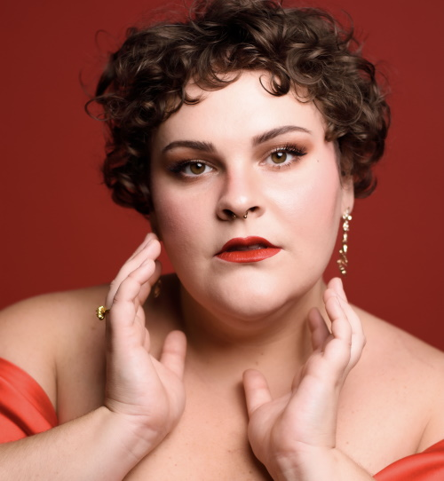
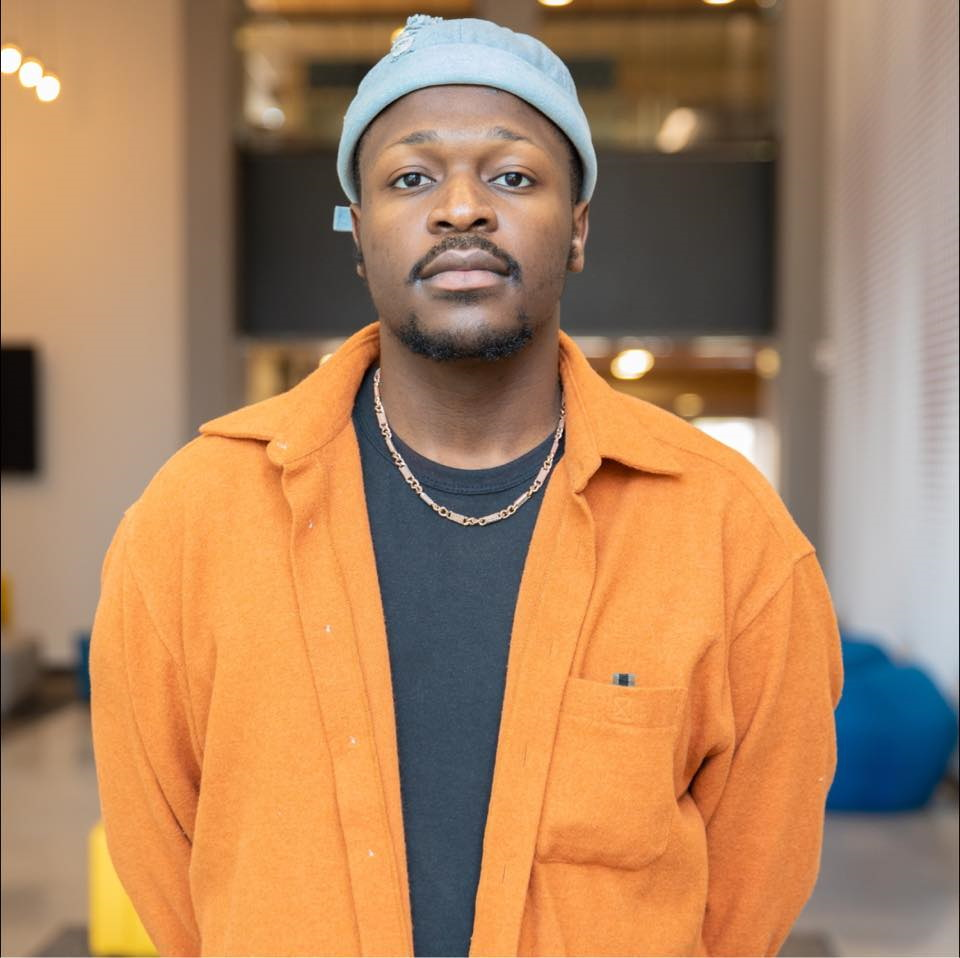
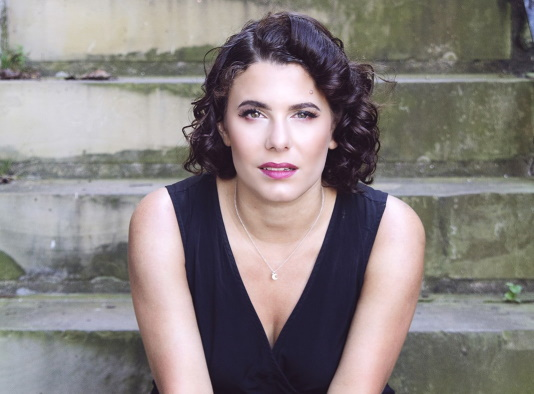
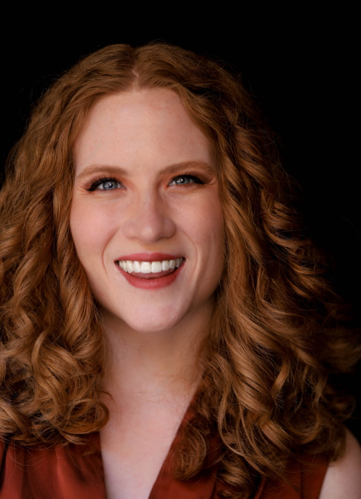

Olivia Broderick (Monica) (she/her) soprano is a performer, writer, and three garden gnomes stacked on top of one another masquerading as an adult woman. She is thrilled to be returning to DVOC as Monica in The Medium after performing as Barbarina in their 2024 production of Le Nozze di Figaro. This past August, she made her role debut as Frasquita in scenes from Carmen and covered Magda in scenes from La Rondine with IndependentSounds! Festival. Other recent credits include Gretel in Hansel und Gretel and Geraldine in A Hand of Bridge with Opera on Tap Philadelphia. In addition to her work as a soprano, Olivia is a writer whose creative work has been published by MyrtleHaus Publishing, the tide rises the tide falls litmag, The Lovers Literary Journal, and Armstrong Literary among others. Scenes from Whatever in Me is Of Heaven, her upcoming collaboration with composer Caroline Hawthorne, were workshopped and performed with Off-Brand Opera's [lab] showcase in May 2025.
Madison Boyer (Monica - cover) soprano, celebrated for her vibrant artistry in works ranging from baroque through contemporary opera, coloratura soprano Madison Boyer’s commanding presence onstage has earned her praise for her interpretations of Königin der Nacht in Mozart's Die Zauberflöte, Greta Florentino in Kurt Weill’s Street Scene, Amahl in Giancarlo Menotti’s Amahl and the Night Visitors, Child in Non Motus by Marc Hoffeditz, First Lady in Mozart’s Die Zauberflöte, and Madam Herz in Der Schauspieldirektor.
A passionate advocate for new works, Boyer places a strong emphasis on premiering innovative compositions and breathing life into contemporary stories. Equally at home in her interpretations of the classics, she is known for captivating audiences with technical brilliance and emotional depth.
Boyer earned a Masters in Opera Performance from Arizona State University and her Bachelors in Vocal Performance from Kansas State University. She has further honed her craft at the Taos Opera Institute, the prestigious, invitation-only Bel Canto Institute of San Miguel in Mexico, and the Austrian-American Mozart Academy.
Noah Donahue (Toby) tenor, hails from Huntingtown Maryland and currently resides in
Philadelphia, Pennsylvania. Recent performance highlights include the role of Don Basilio in Mozart's Le Nozze di Figaro, Rodolfo in Puccini’s La Bohème, Alfredo Germont in La Traviata and Carnegie Hall debut with Vincerò Academy in their "Gala Concert at Weill Recital Hall,” the role of Jacob in the world premiere opera film The Golem of Prague with the University of Florida in collaboration with the UF School of Digital Worlds, Raymond in Tchaikovsky's Maid of Orleans, and Vladimir in Borodin's Prince Igor.
Noah received a Bachelors in Vocal Performance from Indiana University and a Masters from the University of Florida. He can be heard singing at the Victor Café in south
Philadelphia as well as with the New Jersey Masterchorale and Philadelphia Orchestra Symphonic Choir. He also works as an artistic advisor for Opera Magnifico, a rising opera company based out of Gladstone, New Jersey dedicated to reinvigorating audiences with the vocalism of the golden age of opera.

Lindsey Polcyn (Mrs. Nolan and Baba - Cover) has been lauded for her rich mezzo tone, accompanied by her commitment to storytelling. She received her masters in opera at the Boston Conservatory, and her bachelor’s degree in both Opera and Musical Theatre at Capital University, and is now based in Philadelphia. She recently participated in the Apprentice Artist program with Sarasota Opera. Her most recent roles have been Santuzza (cover) in Cavalleria Rusticana with Sarasota Opera and Gertrude in Roméo et Juliette. She has previously portrayed Desirèe Armfeldt in A Little Night Music, Sarastro in MassOpera’s retelling of The Magic Flute, Florence Pike in Britten’s Albert Herring, and La Badessa in Suor Angelica. In 2026, she will cover the role of Azucena in Il Trovatore at Sarasota Opera.
.

Moses Possible (Mr. Gobineau) Praised for his warm tone and storytelling, Moses Possible is a young baritone who is making a name for himself in the Philadelphia tri-state area. He debuted last summer as Fiorello in the Delaware Valley Opera Company’s production Il Barbiere di Siviglia. Other past appearances include being a chorister in Boheme Opera’s production of Il Trovatore and Papageno in Art City Opera’s read through of Die Zauberflote. Outside of his stage experience, he is the bass section leader at the First United Methodist Church of God and is a board member for Trenton based non-profit group The L.O.T.U.S Project.

Rebecca Sacks (Madame Flora - Baba) mezzo-soprano, is known for her dynamic stage presence, smart musicality, and stylistic versatility. With a voice described as “powerful” and “extraordinary” (Operawire), she has recently been heard as Dame Carruthers in Young Victorian Theatre Company’s 2025 production of The Yeomen of the Guard and in her role and company debuts as Mrs. Anderssen with St. Pete Opera’s production of A Little Night Music. Other roles include Santuzza (Cavalleria Rusticana), Fricka (Das Rheingold), Komponist (Ariadne auf Naxos), Queen Alkmene (Die Liebe der Danae), Donna Elvira (Don Giovanni), Baba (The Medium), and Grimgerde (Die Walküre).
A champion of new music, in 2025, Ms. Sacks created the role of Elizabeth Barrett-Browning in Patricia Wallinga’s The Sisters with Liberty City Arts and joined City Lyric Opera for the New York premiere of Amy Beth Kirsten’s Savior. She has also premiered works with the Oregon Composers’ Forum, the Tai Hei Ensemble, and both the University of Oregon and Stanford University composition departments.
She holds degrees from Stanford University and the University of Georgia and has received awards from the American Prize in Opera, the Metropolitan Opera National Council Auditions, the Orpheus Competition, Opera Connecticut, and NATSAA. Rebecca currently resides in Philadelphia with her partner and her beloved cat.

Jesica Santino (Mrs. Gobineau - A Voice - cover) soprano, is an emerging artist based in Philadelphia. In her 25/26 season, Jesica is excited to join Delaware Valley Opera Company covering the role of Mrs. Gobineau in Menotti’s The Medium. Previous credits include The Queen of the Night in Mozart's Die Zauberflöte, Barbarina in Mozart's Le nozze di Figaro, Eliza in Muhly's Dark Sisters, Lola in Moore's Gallantry, the title role of Flotow's Martha, and Mrs. Fiorentino in Weill's Street Scene. She has also performed scenes as Marie in Donizetti's La fille du régiment, Tytania in Britten's A Midsummer Night’s Dream, Josephine in Gilbert & Sullivan's H.M.S. Pinafore, and Fiordiligi in Mozart's Così fan tutte. In concert, Jesica has been the soprano soloist in Rejoice in the Lamb (Britten), Serenade to Music (Vaughan Williams), and Liebeslieder-Walzer (Brahms). Jesica has performed with Temple Opera Theater, Trentino Music Festival, Matador Opera Workshop, The NJ Opera Project, A Modern Reveal, The University of Tulsa Opera Theater, and The Institute for the International Education of Students (I.E.S.) Abroad Music Summer Program. Originally from New Mexico, she holds degrees from The University of Tulsa and Temple University.